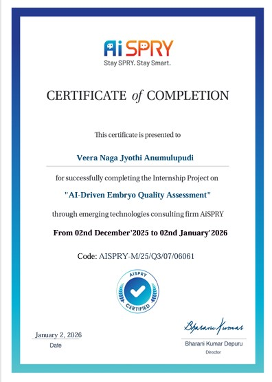
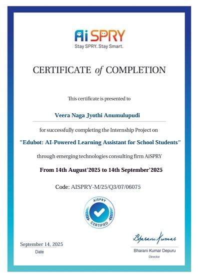
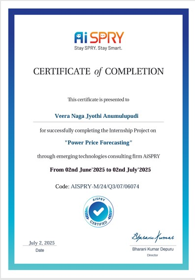

I have three years of professional experience as a Software Engineer and am now transitioning into Data Science and Analytics. The following projects represent my recent work and practical experience in this domain.
This project focuses on developing an AI-based system to automatically assess embryo quality using microscopic embryo images and clinical grading information. Manual embryo evaluation in IVF procedures can be subjective and time-consuming, so the objective was to build a reliable automated solution that improves consistency and supports embryologists in decision-making. The workflow involved preparing and merging embryo image datasets with clinical annotations, creating quality labels based on grading parameters, and training a deep learning model to classify embryos as good or poor quality. A pretrained EfficientNet model was used to extract visual features combined with clinical grading scores. The final system automated embryo quality classification, demonstrating how deep learning can assist reproductive healthcare by reducing manual effort.

Developed a GenAI-powered smart chatbot using Retrieval Augmented Generation (RAG) and multi-agent capabilities to provide intelligent responses across domains. The chatbot integrates PDF knowledge retrieval, conversational AI, math solving, quiz generation, summarization, image search, and equation plotting within a unified interface. Built using Streamlit, FAISS vector search, HuggingFace embeddings, and Google Gemini models, delivering an interactive and scalable AI assistant.

This project focuses on forecasting electricity market prices by analyzing historical Market Clearing Price (MCP) data from the Indian Energy Exchange. The workflow involved data cleaning, handling missing values, outlier treatment, and time-based feature engineering, followed by exploratory analysis to understand price trends and seasonal patterns. Classical time series approaches such as linear, exponential, and quadratic trend models, along with AutoRegressive and ARIMA-based forecasting techniques, were implemented to model temporal price behavior. To further improve prediction accuracy, machine learning models including Random Forest and XGBoost were developed using lag-based feature engineering to capture price dependencies over time. Model performance was evaluated using metrics such as RMSE, MAE, and MAPE, and the final system was able to forecast future electricity price trends effectively. The project demonstrates practical expertise in time series analysis, data preprocessing, and machine learning applied to real-world energy market forecasting.
